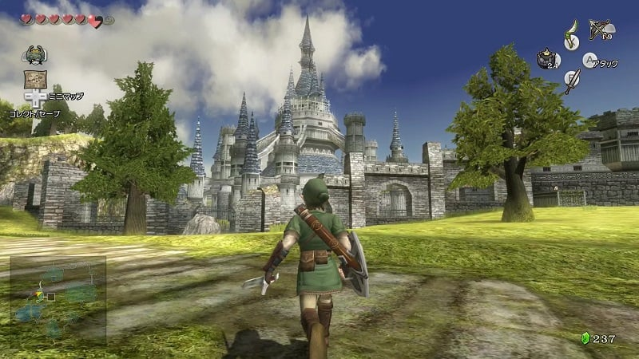
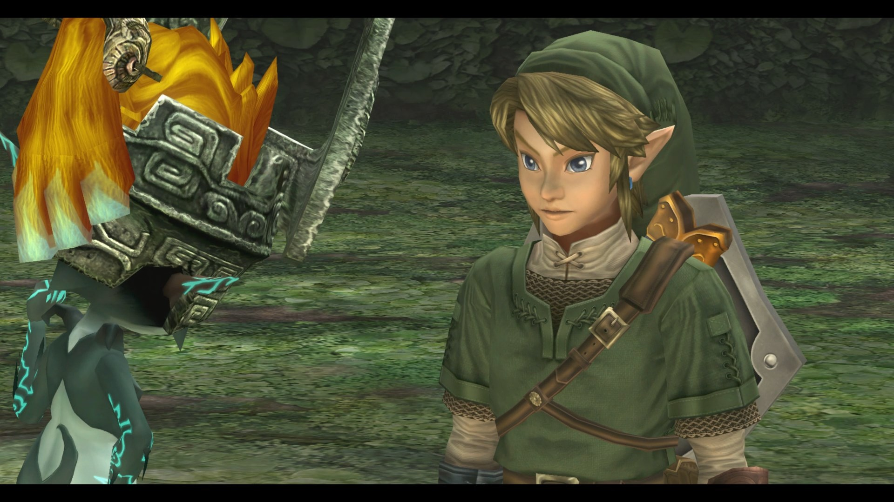
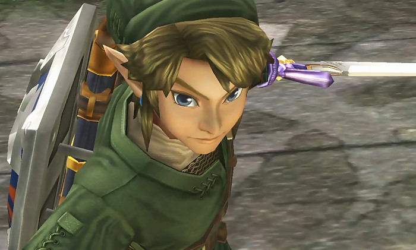
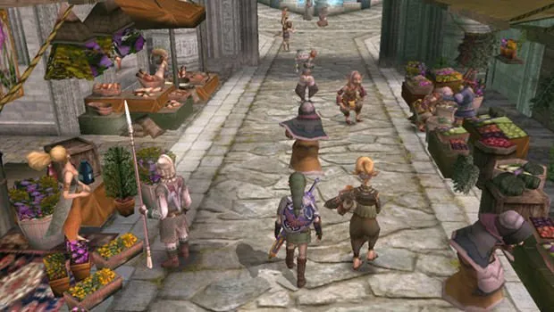
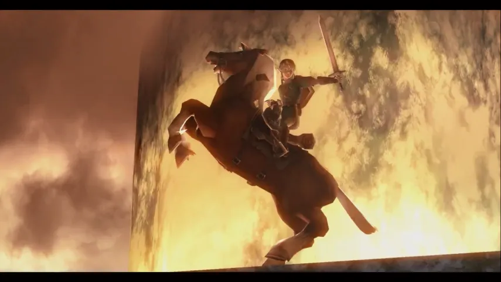

DECOUVREZ UN NOUVEL UNIVERS
e jeu débute par une conversation entre Link et Moï à la source de Latouane près du village de Toal. Moï lui
explique qu'il doit partir pour le château d'Hyrule dans deux jours, mais il souhaiterait que Link y aille à
sa place puisqu'il n'y est jamais allé. En rentrant chez lui, Fahd, un berger qui a du mal à rentrer les
chèvres, demande à Link de l'aide. Pour cela, il doit chercher sa jument Epona, qui se fait soigner par Iria
(l'amie d'enfance de Link). Le lendemain, Fénir, Balder et Anaïs (trois enfants du village) veulent avoir un
lance-pierre que Link doit acheter pour 30 rubis. Puis Moï donne à Link une épée en bois avec laquelle il
fera une démonstration. Ensuite un singe, qui joue de mauvais tours aux habitants de Toal, apparaît et Fénir
se lance à sa poursuite mais il se fait capturer par des monstres, c'est donc à Link de le sauver à travers
la forêt de Firone.Le lendemain, Link termine sa journée de berger, puis va retrouver Bohdan (le chef du
village et père d'Iria) pour les derniers préparatifs de son voyage vers le château d'Hyrule. Mais Iria
remarque qu'Epona est blessée et s'en prend à Link, avant d'emmener la jument à la source de Latouane. Link
la rejoint avec l'aide de Colin, puis la jeune fille demande à Link de faire attention pendant son voyage et
de revenir sain et sauf. Mais des Bulblins arrivent en force à la source, kidnappent Iria et Colin,
assomment Link, puis le roi Bulblin fait son apparition et souffle dans un cor pour faire apparaître un
Portail. Après leur départ, Link se réveille et court en direction de la forêt de Firone mais une grande
barrière se tient devant lui. La forêt qu'il connaissait est maintenant sous le contrôle du Crépuscule.
Decouvrez des paysages et ennemis diversifiers




